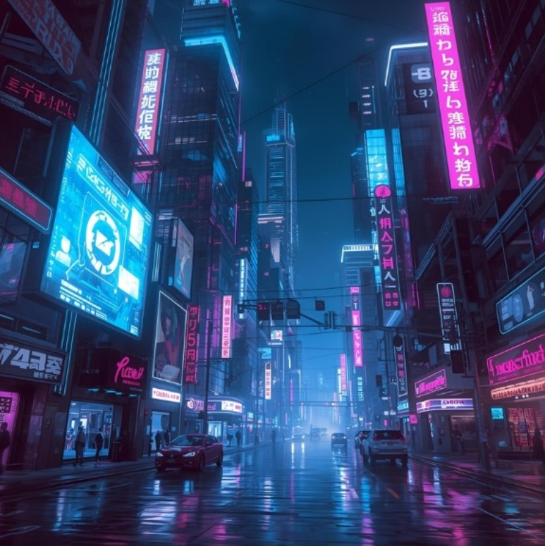
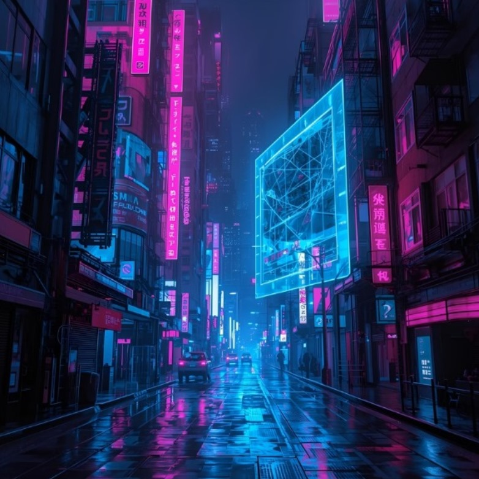

The cyberpunk aesthetic is a futuristic style that contrasts high-tech elements
with a low-life, dystopian reality, defined by neon lights, dark and gritty urban landscapes,
and advanced technology.
![The image is a piece of digital art depicting a futuristic, cyberpunk city at night, illuminated by vibrant neon lights. The primary text visible includes the name HYMAK and Chinese characters.
Setting: A city street at night, wet from rain, with towering skyscrapers and heavy traffic.
Aesthetics: The scene is characterized by a strong cyberpunk aesthetic, with glowing pink and blue neon signs and advertisements.
Visible Text: The English name 'HYMAK' and the Chinese characters '張寬' (Zhāng Kuān) are prominent on a vertical sign on the right building.
Art Style: The image is likely AI-generated or digital art, created to evoke a specific futuristic mood.](images/cyperpunk1.jpg)



![The image is a depiction of a cyberpunk city. This science fiction subgenre typically features a combination of 'lowlife and high tech' in a dystopian future setting.
Aesthetic: The city is characterized by vibrant neon lighting in magenta and cyan, illuminating tall, futuristic skyscrapers and narrow streets.
Atmosphere: The wet pavement reflects the glowing signs and lights, creating a distinct, moody atmosphere.
Technology: The scene includes modern vehicles and advanced technology, juxtaposed with signs in various languages, which is typical of the genre's aesthetic.
Themes: The genre often explores themes of powerful corporations, advanced technology blurring the lines between human and machine, and a gritty urban environment.](images/cyperpunk5.jpg)